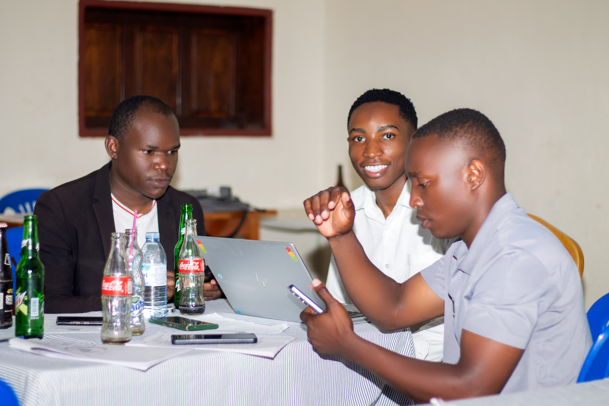
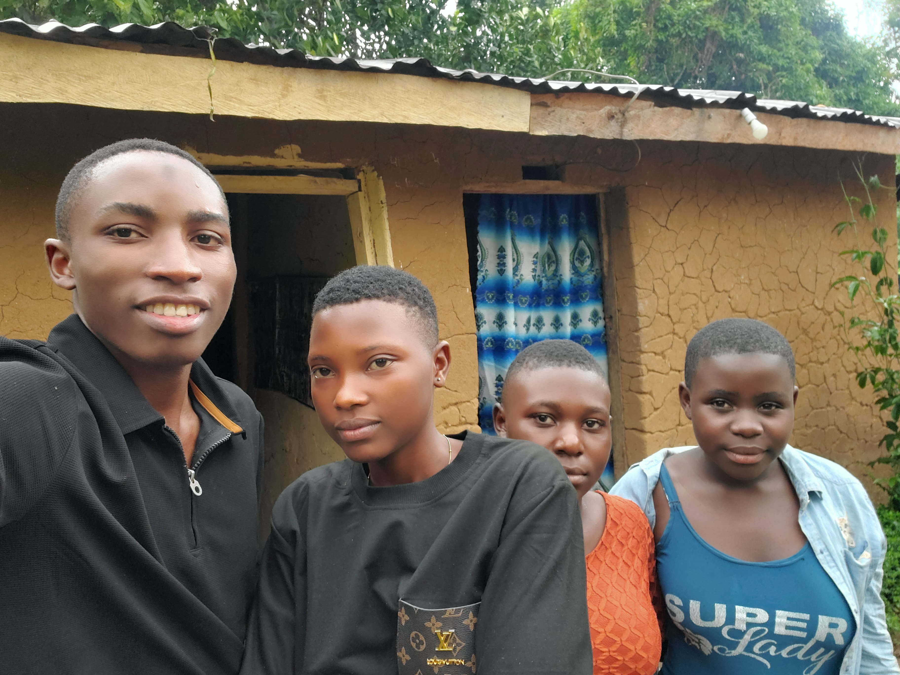

From hardship to hope — the journey of Bukama Hakim and the birth of Uganda- Helping Hands.
Join Our Mission
A humanist, community builder, and advocate for vulnerable children and women, Bukama Hakim founded Uganda- Helping Hands in 2022 after witnessing the devastating impact of COVID-19 on rural communities in Bundibugyo District. His own life experiences of hardship, loss, and resilience shaped his deep commitment to restoring dignity and opportunity for those who need it most.
My name is Bukama Hakim, founder of UGANDA HELPING HANDS, a grassroots humanitarian initiative based in Katumba Village, Bundibugyo District, Uganda.
I was born into a life that taught me very early what vulnerability feels like. My father had two wives. My mother was the second wife, married at just 21 years old to a man already in his forties. She had never attended school. Like many girls of her generation in rural Uganda, education was never presented as an opportunity—marriage was seen as the only path to stability.
Life in a polygamous household brought deep challenges. My mother faced constant intimidation, insults, and fear from the first family. My grandmother later told me how she lived with daily anxiety, unsure of what the next day would bring.
Eventually I was born in Ntoroko District, near the shores of Lake Albert, where my father worked as a fisherman and fish trader. A few years later my younger sister was born. But the tension and threats within the household became unbearable for my mother.
When I was seven years old, she made the difficult decision to leave the marriage.
What followed was one of the hardest periods of our lives. My sister and I were taken to live with relatives, where life often felt less like a home and more like an orphanage. There was heavy work, missed school days, and emotional and physical hardship. Those experiences left deep memories that still guide my actions today.
Eventually our mother took us back under her care. She had remarried, but that relationship also became violent and unstable. After another separation, she returned with us to Katumba Village, where our grandmother lived.
My mother became a peasant farmer and ran a small village restaurant to survive. With little education and limited resources, she worked tirelessly just to ensure we could eat and attend school. Those years shaped my understanding of dignity, resilience, and responsibility.
COVID-19 devastates rural communities. Schools close permanently for many children. Young girls are forced into early marriage. The crisis ignites a vision for change.
UGANDA HELPING HANDS is officially founded. First project: a community garden sharing harvest with 50+ vulnerable families. The journey begins.
Tailoring program launched with 5 sewing machines funded by GoFundMe. Every 3 months, 5 young women gain life-changing skills and independence.
10 orphaned children now in personal care. Construction begins on a permanent orphan home. Community SACCO established with 20 members saving for a better future.
In 2020, when the COVID-19 pandemic struck, life in rural communities like ours became even more difficult. Schools closed for long periods. Families lost their incomes. Hunger increased.
In our village, I saw something heartbreaking begin to happen. Many children never returned to school. Young girls were married off early. Others became pregnant as teenagers. Some children were abandoned or forced onto the streets.
It was painful to watch, knowing how easily a young life can be redirected by circumstances.
As a humanist, I believe that every person deserves dignity, opportunity, and compassion. I could not change the whole world, but I knew I had to begin somewhere.
So in 2022, I started UGANDA HELPING HANDS.
We started a small gardening project, planting food crops and sharing the harvest with vulnerable families. Soon we launched a tailoring skills project. At first we had no sewing machines. But through the kindness of friends abroad, a GoFundMe campaign helped us acquire five sewing machines, which we still use today. With those machines we began training groups of five girls every three months, giving them skills that could help them earn a living and regain confidence.
Alongside the tailoring program, another responsibility grew naturally. Children who had lost their parents—or who had been abandoned—began coming into my care. Some had nowhere safe to stay.
Today I am personally caring for ten orphaned children, while others stay with foster families we try to support. My dream is to build a safe and permanent home where these children can live together with dignity, stability, and love.
I have already begun working on this vision by starting construction of a new orphan house, but resources remain very limited. Still, the work continues step by step.
Through UGANDA HELPING HANDS, our mission is to:
Sometimes the help we offer is small: school books, tailoring training, or basic supplies for mothers after childbirth. But to the person receiving it, that small help can change the direction of a life.

I know what it feels like to grow up uncertain about the future. I know what it means to feel abandoned, unheard, or invisible.
That is why I believe deeply that human beings must help fellow human beings.
Every child deserves protection. Every girl deserves education. Every vulnerable person deserves dignity.
This belief is the heart of UGANDA HELPING HANDS. And step by step, together with compassionate friends around the world, we continue building a future where hope is stronger than hardship.
Your support can help us build a safe home for orphaned children, provide education, and empower women with skills training.